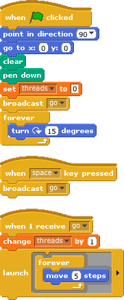
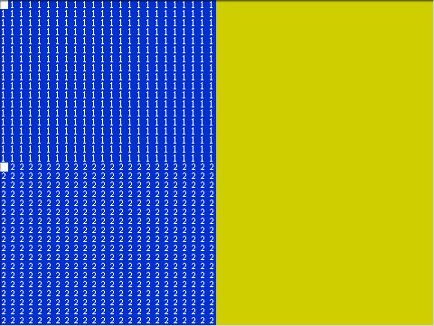
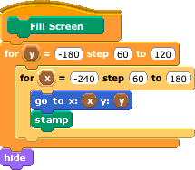
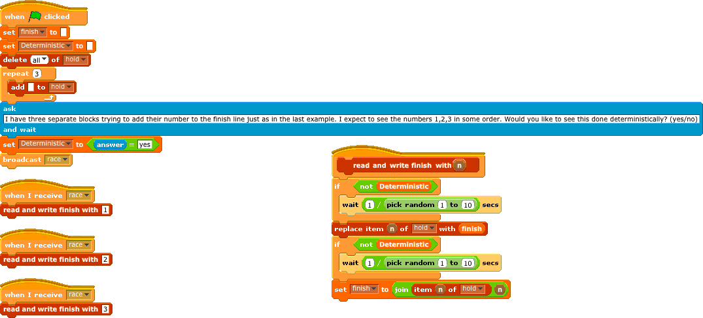
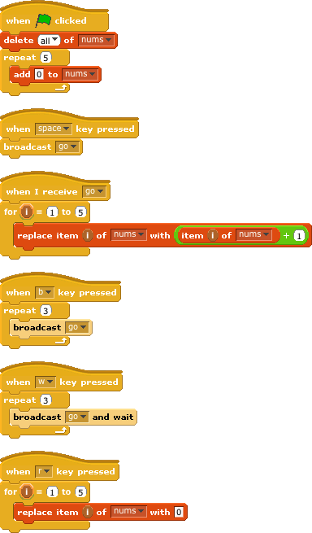

CS10 Concurrency Lab
Learning goals
...from lecture that are reiterated and reinforced here
- History and motivation
- We want to build computers & systems & programming tools to solve (more of) the world's problems faster.
- Since 1971, Moore's law guided the performance curve, which predicted exponential growth for years.
- The performance curve flattened around 2002 because of power wall.
- Basically, we couldn't cool these chips.
- The idea came up that we could run many chips at lower speed, and the "sea change" for multi-core computing was born. Parallel, baby!
- Multi-core computing means that the central processing unit (CPU) will now have multiple workers (cores), each of which can take a simple processing task and compute something
- It is a very exciting time to be in computing, because we get to rethink languages, systems, hardware, data structures, algorithms, as we move to a very parallel, multi-core world
- The power of abstraction is that we don't care how the problem gets done, as long as it gets done. So, for most users, they don't need to know or care that their program was run on a multi-core machine (or even how many cores that machine had, 1, 2 or 1024)
- All desktop and laptop computers sold today have at least one core in them, so that world is here ... now! (The CPUs in your handheld devices probably don't but may soon)
- In a perfect world
- With N workers, take a problem, divide it into N pieces, all workers work exactly equally fast and finish at exactly the same time, and the problem will be done in 1/Nth the time
- In the real world
- Amdahl's law says there are serial parts of every problem which constrain the speedup = 1/s (s = % of code that's serial, assuming infinite workers)
- Even assuming that there's no serial part of the problem, just the mechanics of solving a problem in parallel are difficult
- Time to think how to divide the problem up
- Time to hand out small "work units" to workers
- All workers may not work equally fast or be given equally hard work units, or one worker may take a loooong time
- Some workers may fail (machines crash, hard drives fail, etc) -- usually more of a problem with distributed systems (different computers) than multi-cores (within the same computer)
- There may be contention for shared resources while processing the work units which slows down efficiency (e.g., many cooks waiting for the same mixing bowl to be free)
- You could have a case where workers are waiting for resources in a way that hangs the system (deadlock)
- You could have a case where workers are overwriting each others' results (race conditions). This happens all the time to co-authors who are trying to write a paper together (who are not using Google Docs!) and two of them think that they have the current version, and A makes changes and submits, while B was also making changes to the original. When B submits his changes, A's changes will be lost.
- You may have to wait until the last worker returns to proceed (the slowest / weakest link problem)
- There's time to put the data back together in a way that looks as if it were done by one
- Testing: The output may depend on the order of when the helpers returned their answer!
- E.g., Your job was to square the numbers 1-10. You solicit 10 people to help and hand them all the numbers 1 through 10. Depending on many factors, they may give you their answers in any order, how do you verify that the overall answer is correct? It's not as easy as comparing to "[1 4 9 ...], which is what you used to do when you did the work in serial.
...for this lab specifically
- In Scratch / BYOB what are the issues / facilities to do parallel work, and how does the machine work?
- A single sprite has control blocks which appear to respond in parallel (e.g., multiple "when green flag, do...", "when space is clicked, do...", "when I receive broadcast", etc.)
- Multiple sprites only exacerbate the problem, and race conditions could occur (e.g., what if multiple sprites tried to paint the screen their color all at the same time?)
- What happens when multiple signals are sent to the same "when I receive broadcast" block, do all get through? [yes if Broadcast and wait, no (but consistent) if Broadcast and Edit->Thread Safe Scripts checked, no (but inconsistent) if Edit->Thread Safe Scripts unchecked]
- When we call "launch", does that mean another worker starts up? [answer: yes and no]
- The meta learning goal for this part is for you to develop an accurate mental model of how Scratch handles concurrency. This is so you avoid race conditions and deadlock, and so that you can fully exploit it to your benefit!
Activities
Background; fun sans-computer activities
- (Physical activity) With your partner, take turns at the following activity: shuffle cards, sort them into A♣ K♣ Q♣ J♣ 10♣ ... 2♣ A♠ K♠ ... 2♠ A♥ K♥ ... 2♥ A♦ K♦ ... 2♦
- (share) How fast did you do it? (Did you beat the world record?)
- (share) Think about how fast you could do this if you had the whole class to help. What would your strategy be?
- (class choice) Look at the other suggestions, and choose one, and predict how fast you could do it.
- (Entire class activity) Get up and do it. Your TA will time you starting from when they hand your team the shuffled deck and ending when you hand them back the sorted deck. TAs record how fast you did it.
- (reflect) Discuss with your partner whether it was as perfect as you thought it'd be. Do you think it would scale to 50 people?
- (share) Share a non-computer, real-life example in which the serial portion of some task is smallest (i.e., embarassingly parallel) and greatest (i.e., most difficult to parallelize)
Scratch ... You got some speed, man?
- (display) Scratch supports parallelism! The programming environment is full of concurrency, implicit (two scripts both start when the green flag is clicked, or when they receive the same broadcast message), and explicit (the launch block). Let's first explore the explicit kind, then we'll play with the implicit kind a bit. Let's try to use concurrency for what it was meant for; speed! Three important models of the machine you should develop:
- The first that Scratch is like a parent with lots of kids, the parent wants to give the kids equal attention. So if there are 3 things happening at one time, Scratch will rotate among the three of them, giving each of them a chance to do their "thing" (e.g., complete one iteration of a loop, say). It will choose the same order every time, in a very predictable way. This is known as time-sharing.
- The second is that Scratch has a speed governor so that projects run the same speed on different machines. It's obvious why that's important -- imagine developing this great Pac Man game on your parent's slow computer and working very hard to get the timing just right so it's not too fast or slow. However, when you share it with others who have faster machines, it runs too fast to play (because the other computers have a faster "heartbeat", the clock rate). So Scratch slows itself down on faster computers so that it always looks like it's running on the same, slow, computer. The reason this is relevant in the discussion of concurrency is that (on the vast majority of computers) Scratch spends a lot of time just sitting there, waiting, so it has lots of idle "cycles" to handle multiple things running at the same time.
- The third is that Scratch actually does NOT make use of more than one core (independent hardware computation unit), it runs everything in one core and time shares any parallel task on the single core. This gives Scratch much more control over its parallelism, since once you decide to use two (or more) physical cores, you can no longer control when (or in what order) the computations will return, and you open up the standard Pandora's box of concurrency problems, like deadlock and race conditions. So your Scratch programs are insulated from these realities, allowing you to have predictable parallelism (usually impossible) at the cost of being able to run really fast and make use of hardware resources.

- (Scratch play) First, to understand the idea of two things happening at once, load up
LaunchTutorial.ypr (shown above). After you click the green flag, let it run for a bit, then hit the space bar once. Then hit it again, and again. Talk with your partner about what is happening, and why. (Answer: When you hit the green flag, Gobo starts off running in a circle, because he's moving and turning at the same time. Now, whenever you hit the space key Gobo's circles become wider because he's moving more than before, and he only does that because his MOVE threads are increasing, not the number of steps per single move. I.e., Scratch initially gives equal time to its 2 "forever" children -- one that turns and one that moves 5 steps. So it's move, turn, move, turn, etc., yielding a (360/15 =) 24-sided polygon with 5-step sides. The next time space bar is pressed, another "child" is born, so now the three equal-time children are: "turn", "move" and "move", yielding a 24-sided polygon with 10-step sides, or a "circle" of twice the size)
- (Scratch debug) When you put two "When green flag ..." hat blocks in the same sprite, both will run at the same time! Similarly, if multiple sprites all have "When green flag..." hat blocks, these will run concurrently as well. Load up
SerialVsParallelBuggy.ypr, and click the green flag. You'll see one 'serial' gold square 10x10 sprite paint the area on the right by stamping itself. You'll also see two blue 'parallel' 10x10 sprites sharing the labor of painting the area on the left by stamping themselves. Two screenshots are included below, one during computation, and one after all three sprites have finished.
- The first thing to note is that the parallel side finished in exactly half the time of the serial side. Discuss with your partner why this is.
- The second thing to note is that there is a slight concurrency bug. The first blue squares for the 1 and 2 sprites appear not to get stamped. Fix this bug so that there are no missing stamps, save the project as
SerialVsParallel.ypr and submit it online.

- (display) Reflection. It's important to form an accurate mental model of the machine/software when working with it. Hopefully you've seen here that Scratch gives equal time to all the workers (scripts), in lock step, and that concurrency bugs can creep up very easily.
Scratch ... Don't all talk at once!
- (display) Scratch supports parallelism! Let's explore some of the fun/challenges of concurrent programming, nondeterminism. In this context, this means we can't pre-determine what the results will be; determinism means we could predict what the outputs would be. One of the first exercises we always have parallel programming students do (in other languages) is to have a "dispatcher" start up 10 "workers" (other langauges typically call these threads), numbered 1-10, and all the workers do is shout out "Hello from thread #i" (where i is a number from 1-10). The neat thing that always results is that the result looks something like a random permutation of "Hello from thread #i" numbers, almost never in order. Every time the program runs, a different order comes out. It's neat to see that, and realize when programming concurrently, we need to understand that (for many complicated reasons), the workers may take different amounts of time to return, so our computations shouldn't depend on their order (as the printing example did).
- (Scratch modify) In the last Scratch exercise, it was a little artificial; the sprites were in lock step. Let's take a look at a similar project, Determinism.ypr. Here four 60x60 sprites do the same thing (color the screen by stamping themselves through the
Fill Screen command shown below), and once they finish, they add their name to the end of the finish variable. Run it a couple of times. Boring, right? That was because Scratch is still in lock step. Make a very small change to Fill Screen - have each sprite wait a random value between 1 and 1/10 seconds before stamping. (this involves the introduction of a very simple command right before the "stamp" call in Fill Screen: "wait (1 / (pick random [1] to [10])) secs"). Run it a few times; now what happens? (Answer: Four "threads" take off, and the slowest (i.e., last) color at each time step is that one who colors that 60x60 square). Save this project as NonDeterminism.ypr.

- (quiz) If we run the following Scratch program and answer "yes", we note that
finish is always 123. What are the possible values of finish if we answer "no"? (we've shown the definition of read and write finish with n)

- (Scratch play) Test your answer by running
RaceCondition.ypr several times, answering "no". Compare with answering "yes".
- (display) Quiz Answer explained
- The answer is: all the permutations of 1,2,3 where all 3 numbers present (= 6) + all the permultations of 1,2,3 where only 2 numbers present (= 6) + all the permutations of 1,2,3 where only 1 number present (=3) for a total of 15 possibilities.
- If all three numbers present, it's as if we were deterministic. Here's how it could happen (for this example order, obviously all 6 permutations are possible = {123,132,213,231,312,321}):
- finish starts empty
- 1 reads finish (), joins its 1, finish is now 1.
- 2 reads finish (1), joins its 2, finish is now 12.
- 3 reads finish (12), joins its 3, finish is now 123.
- finish is 123
- If only two numbers were present, we had a race condition, and here's how it could happen (again, all 6 combinations and permutations are possible = {12,21,13,31,23,32}):
- finish starts empty
- 3 reads finish () into its hold
- 1 reads finish () into its hold
- 3 joins its 3 to the number it held (), finish is now 3
- 1 joins its 1 to the number it held () and sets finish to 1. The 3 is now lost, clobbered due to a race condition.
- 2 reads finish (1), joins its 2, finish is now 12.
- finish is 12
- If only one number were present, we also had a race condition, and here's how it could happen (again, all permutations possible = {1,2,3}):
- finish starts empty
- 1 reads finish () into its hold
- 2 reads finish () into its hold
- 3 reads finish () into its hold
- 3 joins its 3, finish is now 3
- 2 joins its 2 to the number it held () and sets finish to 2. The 3 is now lost, clobbered due to a race condition.
- 1 joins its 1 to the number it held () and sets finish to 1. The 2 is now lost, clobbered due to a race condition.
- finish is 1
- (display) Reflection. The above problem was an artificial simulation of what happens with other languages which might have three concurrent computations running in hardware, each innocently trying to join their number to the finish line. Thankfully, since Scratch doesn't run separate computations in hardware, this problem doesn't creep up (unless we bend over backwards to do something silly like we do here). Lesson? Whenever possible, make sure your concurrency computations are independent of which worker returns first.
Scratch ... Some details to form a mental model
- (display) This section is to help you understand the machine model some more, so that you don't get frustrated as you're working on your own projects. There are some subtleties when the same message is broadcast multiple times.

- (Scratch play) Let's explore some subtle details.
- Load in
MultipleBroadcast.ypr, shown above.
- Take a look at the green flag hat block and the "
when I receive go" hat block Do you agree that all 5 numbers in nums should always be the same when the program is done running? This is called a Loop Invariant (something that if it's true before the loop, will be true after the loop), and it's easy to prove this should always be the case.
- Make sure you have "
Edit->Thread Safe Scripts" checked.
- Hit the
r key (for reset), space bar (to broadcast go once), w key (to send three consecutive broadcast-and-waits of go), and b key (to send three consecutive broadcasts of go). Are all the values the same? Did you get what you expect? (No, the broadcasts should have incremented each number 3 times but it only incremented it once!)
- Now uncheck Edit->Thread Safe Scripts, and reset the values of all 5 elements to 0.
- Now reset, and try the
space, w and b keys. What just happened? Did you get what you expect? (No, the Broadcasts should have incremented each number 3 times, but it only incremented the first one!)
- (display) Reflection. When lots of broadcasts are coming through into a receive block, there are three possibilities:
- If you want all of them to take effect, use "
broadcast _ and wait"
- If you don't need all of them to take effect, but want to keep all of your inner data structures consistent, make sure you have
Edit->Thread Safe Scripts checked.
- If you have Edit->Thread Safe Scripts unchecked, you can't trust Scratch to preserve your Loop Invariants!
- Lesson: The first thing you should always do is check
Edit->Thread Safe Scripts!